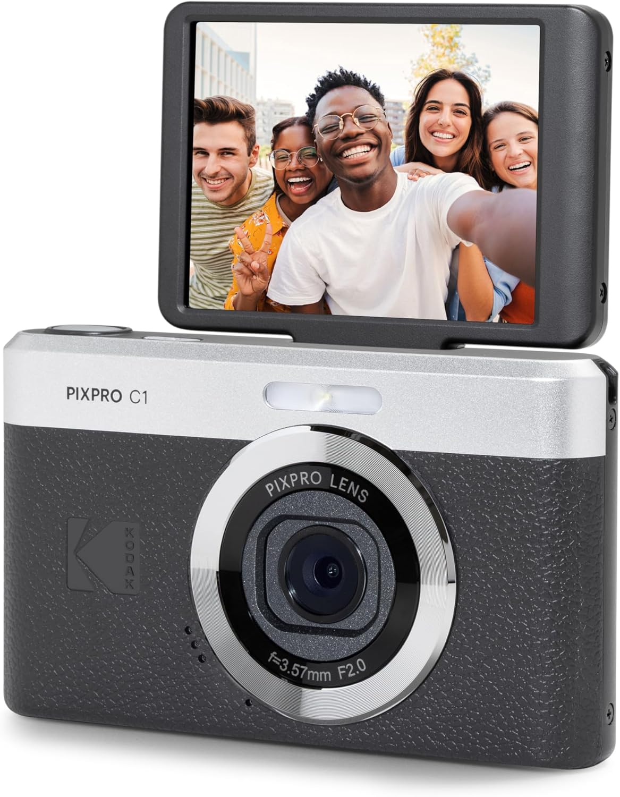
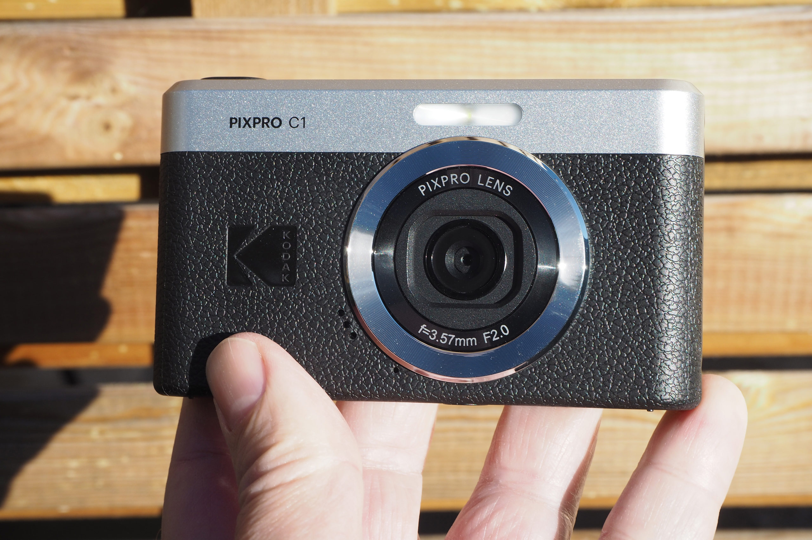

There's something about those old photos — a little grainy, slightly washed out, colors that feel warm and imperfect — that just hits differently. If you've ever scrolled through your parents' photo albums and thought "why do these look so much cooler than anything on my phone?" — you're not alone.

That vintage, early-2000s digicam look is everywhere right now. And the good news? You don't have to be a professional photographer or drop hundreds of dollars to get it.
The Kodak PIXPRO C1 is a brand new compact digital camera that does exactly what you want — captures moments with that nostalgic, film-like quality — without making your wallet cry. At just around $99, it's one of the most accessible ways to tap into the vintage photo trend right now.
It's small, lightweight at only 4 oz, and comes with a flip-up screen that makes selfies and candid shots effortless. No complicated menus. No learning curve. Just point, shoot, and let the camera do its thing.

The built-in retro filter is where the magic happens. One tap and your photos transform — desaturated tones, a touch of grain, that soft imperfect glow that makes everything look like it was shot in 2003. It's not a phone filter. It's baked right into the camera, giving you that authentic feel straight out of the shot.
The simplicity is honestly part of the charm. No complicated settings to overthink. You focus on the moment, the people in front of you — and the camera handles the rest.
It's not about clinical perfection. It's about character — photos that actually feel like memories, not screenshots.
Your phone takes great photos — almost too great. Everything is sharp, bright, and perfectly processed. That's fine for some things, but it doesn't give you that look. The PIXPRO C1 gives your photos character. Imperfection. Soul. The kind of aesthetic that stands out on your feed and actually feels like a memory.
If you've been curious about the digicam trend and want to try it without a big commitment, the Kodak PIXPRO C1 is the move. It's fun, it's fresh, it's affordable — and it delivers that vintage look your phone simply wasn't built to replicate. This is one of our favorite finds at The Hanis, and we think you're going to love it too.
Grab It on Amazon →As an Amazon Associate, The Hanis earns from qualifying purchases.